I used Claude Code to build a fully playable, atmosphere-driven 3D horror game set in an
abandoned 1985 shopping mall — exploring what AI is truly capable of in game production
and what it means to co-create something with it.
Inquiry Question
What is AI truly capable of when it comes to game production —
and how easily can it make something complex?
Starting Point
The project started with a big idea: make an open-world 3D game entirely with AI.
I thought that would really test the limits of what AI could do. But as I got
further in, I realized that scope was probably too large for a school project timeline.
While doing research, I noticed that most people on YouTube who were making games
with AI were making horror games — the genre is more linear, more contained, and
easier to scope. So I pivoted. The horror direction wasn't originally planned; it
came out of research and practical thinking.
Why This Question Mattered
I want to go into game design as a career. The fear of AI taking jobs in that
industry has always been in the back of my mind. This project was my way of
actually confronting that fear directly instead of just worrying about it.
I wanted to understand what AI can and can't do, and figure out how I could work
alongside it rather than be replaced by it.
Central Hub
Research Dashboard
My research was hands-on and comparative. I didn't just read — I watched people do it,
took notes, used NotebookLM to make mind maps and flashcards, and then immediately
tested what I learned in my own project. Every source was evaluated against what I was
actually experiencing in my own process.
Source 01
YouTube — Case Study / Experiment
"I Made 6 AIs WORK TOGETHER to Make a Horror Game"
Using multiple specialized AI tools creates a faster but fragmented workflow —
human input is still necessary to refine, connect, and direct outputs into a
cohesive final product.
How I used it: Watched the full video, took notes on each AI tool's role, used AI to summarize the process into clearer steps, and built a workflow diagram.
What it changed: Taught me to plan for editing and refining AI outputs rather than expecting perfect results — and gave me early confidence the project was possible.
Documents using ChatGPT to build a complete horror game in one week. AI works
best as an assistant, not an independent creator — the human still has to direct,
test, and fix.
How I used it: Compared findings against Source 01, made flashcards and a data comparison table using NotebookLM.
What it changed: Reinforced keeping my scope small — even with AI, the process still requires constant testing and revision at every step.
A reality check on the legal and ethical risks of AI in game dev — copyright,
IP ownership, and accountability. A counterpoint to the more optimistic sources.
How I used it: Read the full article and pulled out the legal and ethical risks that relate to student and indie game dev. Made an infographic and slide deck in NotebookLM.
What it changed: Made me think about who owns what AI generates — even at a student project level, those questions are worth having answers to.
"AI in Game Development: How It's Reshaping Studios, Tools & Player Experiences in 2026"
90% of developers are already using AI in their workflows. 7,300+ Steam games now
report using generative AI. The "new generalist" framing — directing AI across
disciplines instead of specializing in one.
How I used it: Cross-referenced industry stats against the other sources and made a data table and mind map in NotebookLM.
What it changed: The "new generalist" framing shifted how I thought about my own role — the skill isn't mastering one tool, it's knowing how to direct AI across different tasks.
"AI in Video Game Development: From Smarter NPCs to Procedural Worlds"
Covers smarter NPC behavior, procedural world generation, dynamic storytelling,
and personalized gameplay as practical applications already in use in modern games.
How I used it: Compared the article's examples against the HollowWolf video and expanded my mind map on AI-assisted game development.
What it changed: Gave me specific ideas for keeping the game simple and atmosphere-focused — AI could handle code and troubleshooting while I focused on design and feel.
Most creators I researched used multiple different AI models — one for writing, one
for art, one for code, one for sound. My professor told me Claude Code could handle
all of it if I directed it well enough, so I committed to a single-tool approach.
That was a real constraint but it worked.
The biggest finding wasn't about the technology itself — it was about the role the
human plays. AI can execute fast, but it can't tell you when something feels wrong.
That judgment has to come from you.
Research Visuals
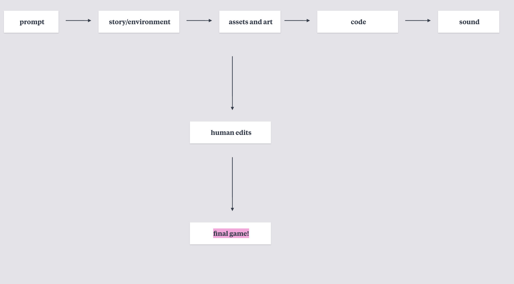
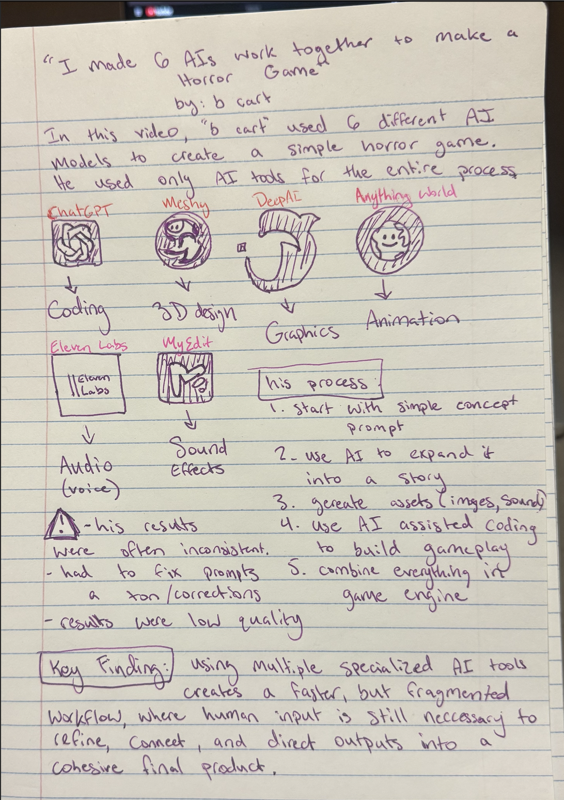
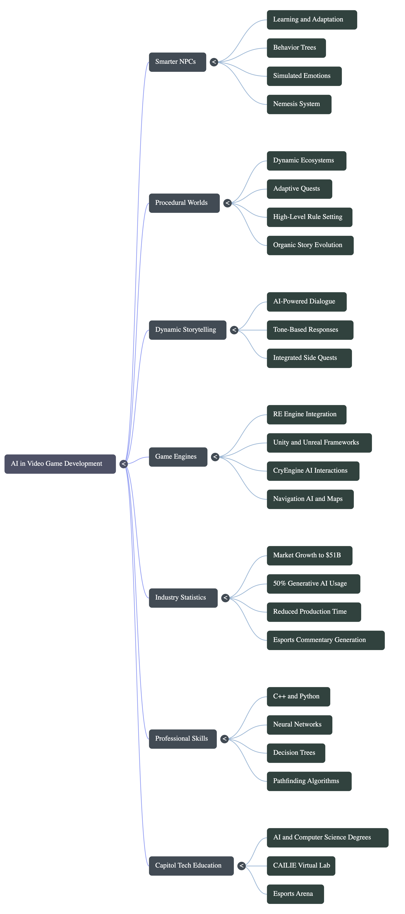
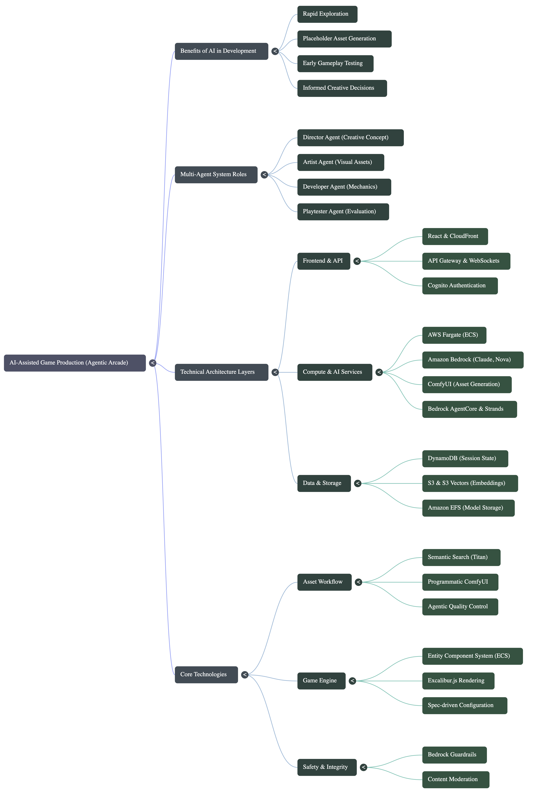
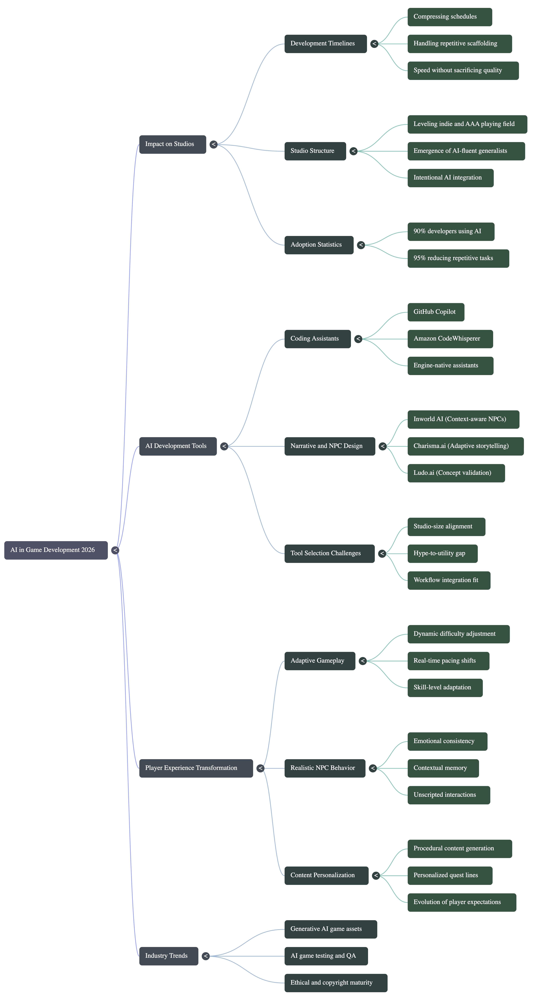
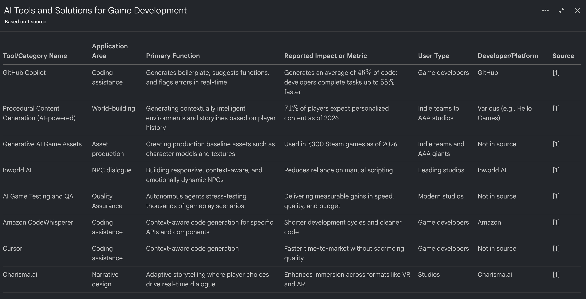
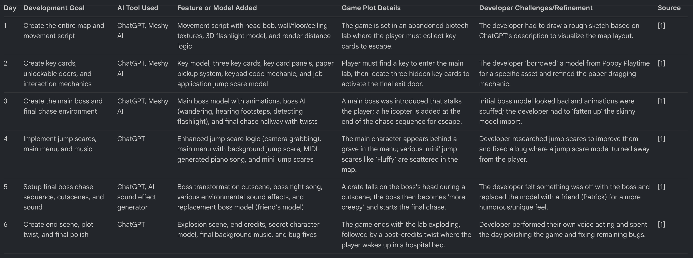
Maintenance Corridor
Process & Iterations
The workflow was daily, iterative, and notebook-driven. I would play through the current
version, write down everything that felt wrong or missing in a physical notebook, then
feed those notes back to Claude as a new set of instructions.
40+Total VersionsChatGPT + Claude
27Claude VersionsClaude Code only
6Weeks of Work
1AI Tool UsedClaude Code
7VHS Tapes Written
2,561Lines of Code
Where It Started — Original Concept
Static Bloom
The first concept fed into ChatGPT was called Static Bloom — a 3D atmospheric
exploration game set in a flooded future city where dead shopping malls come back to
life when music is restored to them. Players would explore giant abandoned malls as a
"Signal Diver," collecting lost audio fragments and using soundwaves to unlock hidden
memories and physically transform the environment. Environments would shift with the
beat, stores would regrow neon gardens, and mannequins would act out frozen memories.
ChatGPT couldn't get anywhere near the visual complexity or atmosphere the concept
needed — after weeks of trial and error it was still producing empty white-walled
rooms. The scope was stripped down: the flooded future city became an abandoned 1985
mall, the music mechanic became a VHS tape system, and the transforming environments
became static atmospheric horror. Static Bloom became CLOSED 1985 — same liminal mall
setting, same atmospheric ambition, built around what was actually achievable.
Visual Comparison — First Load-In, Different Tools
Both screenshots show the first moment of loading into the game. Left is the ChatGPT version; right is the first Claude Code build.
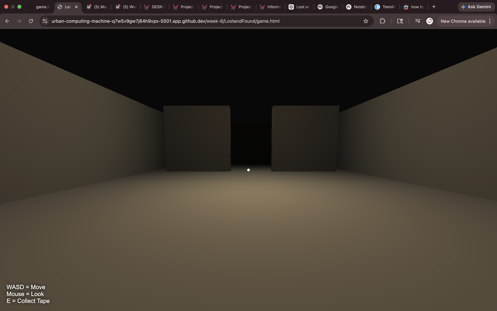
ChatGPT — Early Version
Claude Code — First Build
Tool Comparison — Same Vision, Different Results
ChatGPT (Early Stage)
White walls, white floor, no ceiling
No sound, no atmosphere, no color
Could not get past basic geometry
Ignored visual references and images
Broke down with complex instructions
Weeks of trial and error with little progress
Claude Code (Primary Tool)
Dark lighting and atmosphere on the first attempt
Understood visual references immediately
Built dingy wallpaper, ambient sound, and fog
Handled complex multi-room 3D level design
Implemented AI behavior for Harold
Produced a playable game in the same session
Major Pivots
01
Open-World → Horror
Originally planned an open-world 3D game to fully stress-test AI capabilities.
Pivoted to horror after research showed that was too large a scope for the timeline
— and that most successful AI game experiments were horror games.
02
ChatGPT → Claude Code
The single biggest turning point of the project. Stopped wasting time with a tool
that could not produce what I needed. Claude Code immediately understood my vision
and aesthetic direction in a way ChatGPT never did.
03
Harold's Design — Three Versions
Started as a white rectangle (ChatGPT), became a simple pale figure (early Claude),
then evolved into the final unsettling, asymmetric, blood-smeared janitor after
multiple rounds of increasingly specific direction from me.
04
Maze Backroom — Rebuilt Three Times
First version was solvable in seconds. Second had a wall blocking the only valid
path to the key. Third is a verified serpentine design that forces four full-room-length
runs before you reach the northeast corner.
05
Exit Sequence — From Browser Prompt to Full Chase
Originally just a browser prompt asking for the door code — felt completely out of
place. Rebuilt into a proper HTML keypad overlay, a full-screen "RUN." warning,
an accelerating heartbeat, and a permanent final chase.
Gameplay Progression
Early ChatGPT Demo
Early Claude Version
Version 8
Version 19
Early Claude Builds — Week 6
These are among the first Claude Code builds — dark lighting, wallpaper textures, and atmosphere present from the start.
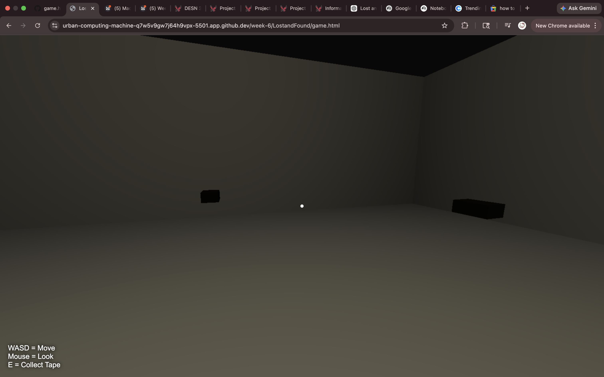
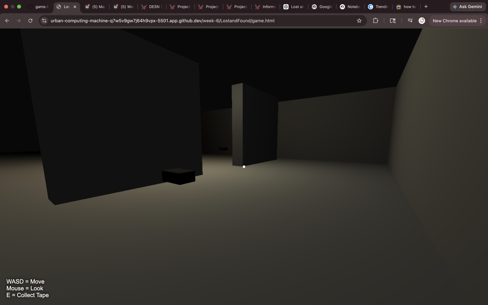
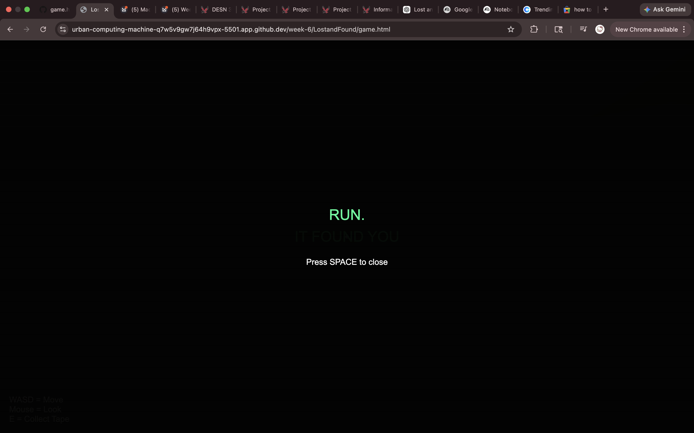
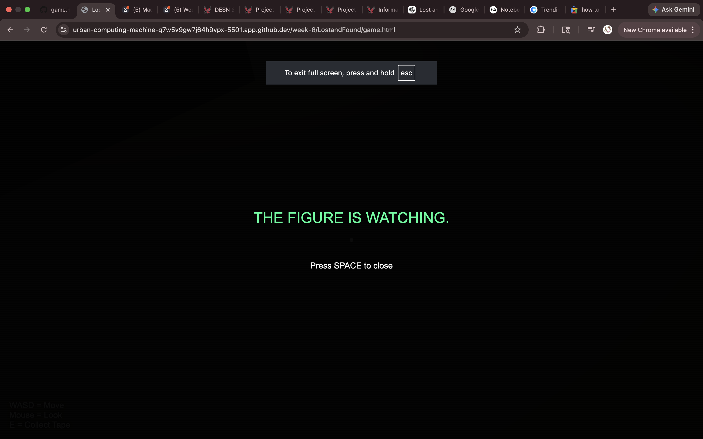
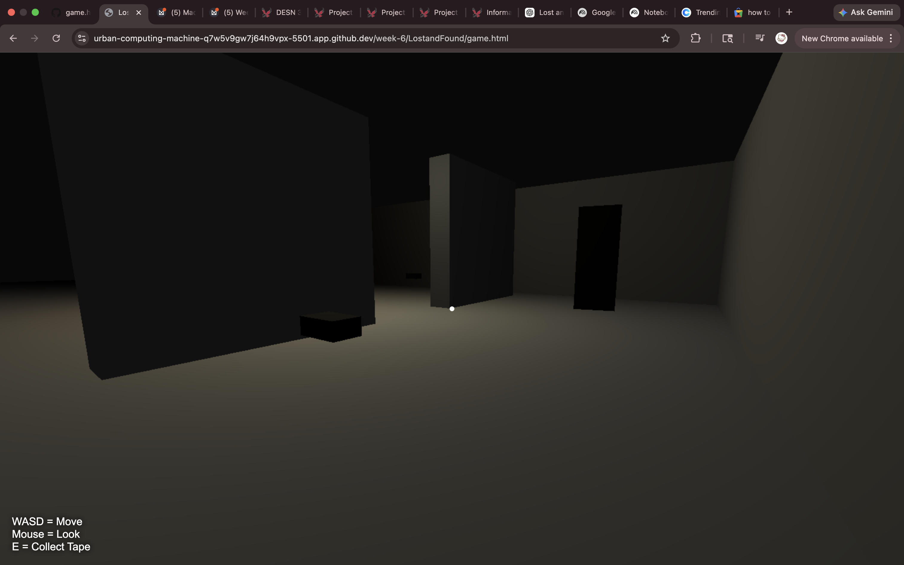
First Full Claude Builds — Week 7
Week 7 was a full restart in Claude Code with the complete horror concept in place — rooms, layout, Harold, and VHS tape system all building out.
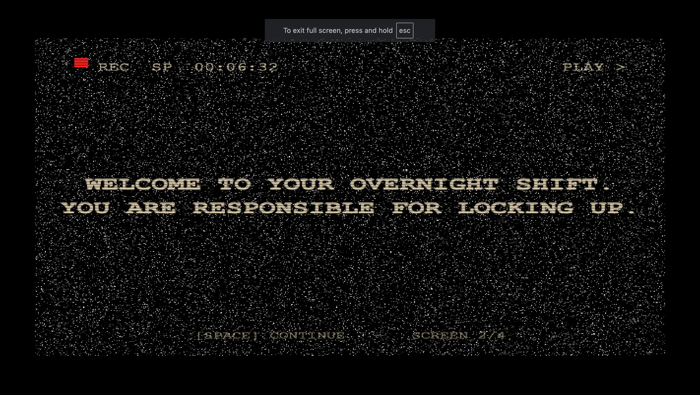
Playtest Notes — Physical Notebook
Every version was playtested manually. Issues, ideas, and changes were written in a
physical notebook and fed back to Claude as the next set of instructions.
Security Room — Final Tape
The Final Game
CLOSED — 1985 is a fully playable browser-based 3D horror game. You play
as a mall security guard on the overnight shift of November 14, 1985. The power goes out.
The exits lock. Something is wrong. As you explore the abandoned corridors of Westfield Mall,
you find 7 VHS tapes left behind by former employees. Each tape reveals more about Harold
Finch — the janitor who died in this mall and never left. The final tape gives you the exit
code. But the moment you have it, Harold knows. And the chase begins.
Every major decision in this game came from me. Claude was the technical executor —
I was the director. I described Harold's appearance in detail until he looked right.
I designed the lore system across all 7 tapes. I decided the mall layout, which rooms
existed, what was in them, and how the lighting should feel.
I playtested every version and kept notes on what was broken, what wasn't scary
enough, what felt off. I made Harold scarier by specifying exactly what uncanny
meant — too tall, asymmetric, rotting, like he'd been there a long time. None of
that came from AI. The AI made it real. I decided what it should be.
The game draws references from Slender Man, Silent Hill, FNAF, and backrooms/liminal
space aesthetics — I pulled what I liked from each and cut what didn't fit the scope
or tone I was going for.
Technical Specs
EngineThree.js (r128)
FileSingle HTML file
Lines of Code~2,561
Render StylePS1 low-res pipeline
AudioProcedural (Web Audio API)
CollisionAABB system
Monster AI3 modes: dormant / lurking / chasing
Versions27 in Claude Code / 40+ total
Exit Corridor
What I Learned
What Changed in My Thinking
The fear of AI replacing me is still real, but it's more specific now. I understand
better what AI can and can't do. It can't have taste. It can't decide what feels
scary. It can't know when something is almost right but not quite there yet. That
judgment is mine.
I came into this project thinking AI might be able to replace what I do. I'm leaving
it understanding that what makes a game designer valuable isn't just the ability to
produce — it's the ability to know what good looks like and keep pushing until you
get there. AI can't do that. I can.
What Clicked
The moment I switched from ChatGPT to Claude Code was the biggest turning point of
the whole project. The same vision, the same references, the same prompts — completely
different results. That experience made me realize that "using AI" isn't one skill. It's
about knowing which tool fits the task, and being specific enough to actually get what
you want out of it.
Working with AI is a skill — and like any skill, the more intentional you are about it,
the better the results. Vague prompts produce vague results. Knowing what you want
clearly enough to describe it is the whole job.
What I Would Do Next
If I started over: I'd skip ChatGPT entirely and go straight to Claude Code. And I'd
come in with a clearer plan — not a finished design, but at least a tighter sense of
scope and what I was actually trying to make.
I'd also want to experiment with using multiple specialized AI tools the way the
creators I researched did — one for character design, one for sound design, one for
coding — and see whether that produces a more polished final product or just more
fragmentation. That's the next question I'd want to answer.
Key Takeaways
Not all AI tools are equal for the same task. ChatGPT and Claude Code produced completely different results from the same prompt and vision.
The most important skill in AI-assisted creative work is knowing what you want clearly enough to describe it. Vision has to come first.
AI can execute fast, but it can't judge. The human creative eye — knowing when something feels wrong, scary, off, or right — is still entirely irreplaceable.
I don't think AI is going to take my job. But I do think it's going to change what the job looks like. The people who thrive will be the ones who know how to direct it.
Building something you're genuinely passionate about makes the hard parts worth it. This never felt like homework.